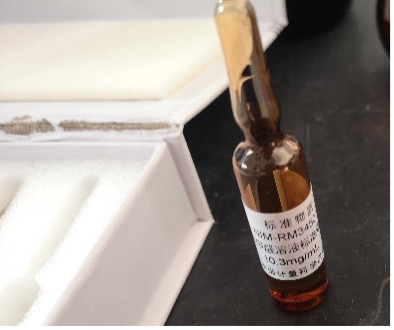
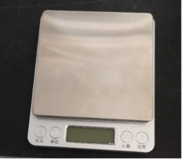
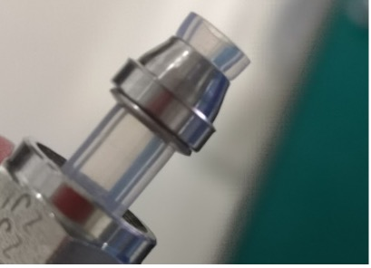

Instruments from Peking University during the SEANA Cruise
| HCHO | N2O5 | j-values | |
|---|---|---|---|
| Size | 45×15×56cm (fits in 19” std standard cabinet) |
90×43×26cm | 45×15×50 cm (put a table in the container) |
| Weight | 10kg | ＜30kg | 10 kg |
| Sampling flow | 1 L/min | 1-5L/min | |
| Sampling tube | 1/4inch, PTFE Length is determined to local situation |
PFA, 1/4inch，<3m needs to be filtered (we will supply filter head and filter membrane) |
An UV receptor (needs to be installed appropriately) |
| Power | 220V, 150 W | 220V,150W | 220V, 100 W |
| Reagent needed | - Ammonium acetate ( Analytical purity+, 1kg/month) - Acetic acid (Analytical purity, 40ml/month) - Acetylacetone (Analytical purity,30ml/month) - Concentrated sulfuric acid (Analytical purity, 60ml/month) |
None | None |
甲醛仪所需药品估算方法
- 以观测40天计算，每六天更换R1吸收液，防止损耗，以10次估算。
- 每12-14天更换反应液，并标定一次，以5次估算。
化学试剂/ Chemicals
- 浓硫酸（分析纯），15 mL/次*10次=150ml
- 醋酸铵（分析纯及以上），385 g/次*5次=1935g，我们使用的是西格玛的
- 冰醋酸（分析纯），12.5 mL/次*5次=62.6ml，我们使用的是TCI的
- 乙酰丙酮（分析纯，避光保存），10 mL/次*5次=50ml，我们使用的是TCI的
- 10.3mg/L HCHO甲醛原液/标准溶液 1ml/次，下图标准溶液瓶是2ml一瓶，拆开后只能用一次，即需要5瓶标准甲醛溶液。 
- 1mol/L氢氧化钾: 清洗，10-40ml（使用注射器）
- 酒精（甲醛仪、CEAS、浊度计清洗需要，1-2瓶就够了）
气体/ Gas
-
氮气：
甲醛仪：1L/min，每日走30-40分钟空白，共需要2000L（按采样50天，一天走40分钟空白计算）。
CEAS：200ml/min，共需要14400L（按采样50天计算）如40L一瓶（10MPa=100bar）则需要5瓶，CEAS的氮气用量比较大，能否用液氮供氮气。 - CEAS - 氦气：4L
- CEAS - NO：10ml/l, 需要两瓶8L的NO
- Nephelometer - 二氧化碳：4L
设备/ Equipment
- 甲醛仪需要冰箱存放5L反应液R2，冰箱需要放在甲醛仪的边上。
- 大超声波清洗器
- 超纯水发生系统
- CEAS需要单独的进样口，进样管最好不超过1.5m；仪器开盖运行，温度不可过高
配件工具/ Tools
- 电子天平 
- 气体流量校准仪
- 针式过滤器+采样过滤膜，3-5个？针式过滤器和采样过滤膜需按照当地污染状况确定，>3-5。
- 蠕动泵管 备用1套？每月更换一次是换管子还是换一段？准备一套，每月更换一根新的管子。
- 扳手（6、7号）
- 内六角扳手（3mm, 1.5mm）、内球六角扳手
- 卡套接头 
- 验漏瓶
耗材/ Consumables
| 名称 | 用途 | 规格 | 数量 | 备注 |
|---|---|---|---|---|
| 移液枪或移液管 | 配制溶液 | 200μl、1ml、5ml | 3 | 各1 |
| 棕色容量瓶 | 配制溶液 | 棕色100mL | 8 | |
| 气体流量计 | 标定气体流量 | 0—10L/min | 1 | |
| 烧杯（塑料） | 配制溶液，日常维护 | 50ml、100ml、200ml | 2 | |
| 电子天平 | 配置溶液 | 1台，1-500g | 1 | |
| 注射器 | 日常维护，清洗 | 5mL、20ml | 若干 | |
| 药匙 | 溶液配制 | 大号20cm | 2 | |
| 封口膜 | 密封瓶口、管口等 | 若干 | ||
| 铝箔 | 封口 | 若干 | ||
| 无粉尘的手套 口罩/酒精/ |
防护 | 若干 |
仪器功率/ Power consumption
甲醛仪
电 源：供电电源：220VAC
重 量：10kg（不包括药剂）
尺 寸：550mm * 430mm * 280mm
English version
The estimation method of the chemicals required for the formaldehyde (HCHO) monitor:
- Based on 40-days observations, the R1 uptake solution is replaced every six days to prevent loss. Thus, it is estimated as 10 times.
- Change the reaction solution every 12-14 days and calibrate once, estimated as 5 times.
Chemicals
- Concentrated sulfuric acid (analytical purity) 15 mL/time * 10 times = 150 ml
- Ammonium acetate (analyzed pure and above) 385 g/time * 5 times = 1935g, We are using sigma
- Glacial acetic acid (pure for analysis) 12.5 mL/time * 5 times = 62.6 ml, We are using TCI
- Acetylacetone (assay pure, protected from light) 10 mL / time * 5 times = 50 ml, We are using TCI
- 10.3mg/L HCHO formaldehyde stock solution/standard solution 1ml/time, the standard solution bottle in the following figure is 2ml bottle, which can only be used once after disassembly, that is, 5 bottles of standard formaldehyde solution are required.
- 1mol/L potassium hydroxide: wash, 10-40ml (using a syringe)
- Alcohol (formaldehyde monitor, CEAS, turbidity meter cleaning needs, 1-2 bottles are enough)
Gas
-
nitrogen:
HCHO monitor: 1L/min, 30-40 minutes of blank space per day, a total of 2000L is required (calculated by sampling 50 days, 40 minutes of blank space a day).
CEAS: 200ml/min, a total of 14400L (calculated by sampling 50 days) such as 40L requires 5 bottles, CEAS nitrogen dosage is relatively large, can use liquid nitrogen to supply nitrogen. - CEAS - Helium: 4L
- CEAS - NO: 10 ml/l, two bottles of NO of 8L are required
- Nephelometer - Carbon dioxide: 4L
Equipment
- The formaldehyde meter needs to store 5L of the reaction liquid R2 in the refrigerator, and the refrigerator needs to be placed on the side of the formaldehyde meter.
- Large ultrasonic cleaner
- Ultrapure water generation system
- CEAS requires a separate inlet, the inlet tube is preferably not more than 1.5m; the instrument is operated with the lid open and the temperature should not be too high
Tools
- Electronic balances
- Gas flow calibrator
- Needle filter + sampling filter membrane, qty 3-5? Needle filters and sampling filter membranes need to be determined according to local contamination conditions, >3-5.
- Peristaltic pump tube Spare, 1 set? Is it a tube change or a section to change once a month? Prepare a set and replace a new tube every month.
- Wrenches (Size 6, 7)
- Hex wrench (3mm, 1.5mm), hex wrench
- Ferrule connector
- Leak detection bottles
Consumables
| Item | Function | Specification | Qty | Note |
|---|---|---|---|---|
| Pipette or pipette | Prepare the solution | 200μl,1ml,5ml | 3 | 1 for each |
| Brown volumetric flask | Prepare the solution | Brown 100mL | 8 | |
| Barometer | Calibration gas flow | 0—10L/min | 1 | |
| Beaker (plastic) | Preparation of solutions, routine maintenance |
50ml,100ml,200ml | 2 | |
| Electronic balance | Placement solution | 1 unit, 1-500g | 1 | |
| Syringe | Daily maintenance, cleaning | 5mL、20ml | Some | |
| Medicine spoon | Solution preparation | Large 20cm | 2 | |
| Parafilm | Seal bottle mouth, tube, etc. | Some | ||
| Aluminum foil | Seal | some | ||
| Power free gloves/mask/alcohol/ | Protection | Some |
Power consumption
HCHO monitor:
Power supply: power supply: 220VAC
Weight: 10kg (excluding agents)
Size: 550mm * 430mm * 280mm